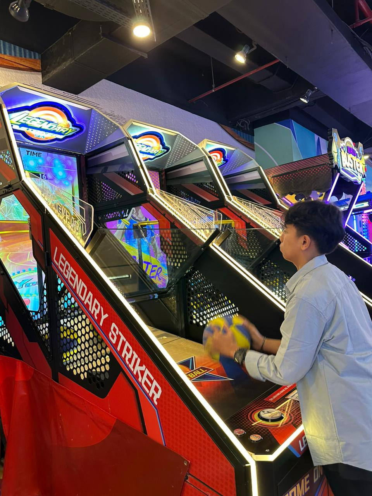

Tentang Saya
Halo! Saya Muhammad Ihsan Hanafi, seorang pemula di bidang IT yang memiliki minat besar terhadap teknologi dan pengembangan diri. Saya aktif terlibat dalam berbagai kegiatan sekolah sebagai panitia, di mana saya belajar banyak tentang kerja tim, komunikasi, dan tanggung jawab.
Saya memiliki dasar pemahaman dalam pemrograman menggunakan Python dan JavaScript, serta pernah mempelajari robotik. Selain itu, saya juga familiar dengan Microsoft Excel, DOSBox, dan mulai mengeksplorasi konsep dasar data sains.
Saya adalah pribadi yang komunikatif, disiplin, mudah beradaptasi, serta memiliki semangat belajar yang tinggi. Saya terus berusaha mengembangkan kemampuan secara mandiri dan siap menghadapi tantangan baru dengan sikap positif.